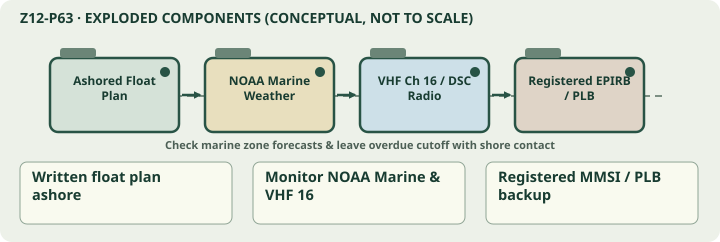

Z12-P63 · Extreme environments · New manuscript
File a marine float plan and monitor VHF Channel 16 and NOAA marine forecasts
Ensure onshore contacts and Coast Guard searchers know your craft, route and overdue time while tracking live marine weather.
When it applies · Large inland lakes (Great Lakes, Boundary Waters large basins), coastal bays and offshore small-craft travel.
Equipment · Written float plan left ashore, waterproof marine VHF radio (where lawful/applicable), NOAA Weather Radio and marine charts.

Actions
- Leave a complete float plan with a trusted onshore contact before launching: vessel description/color/registration, number and names of passengers, departure ramp, exact destination, onboard communications/EPIRB/PLB and overdue call-Coast-Guard cutoff time.[X05, T11]
- Monitor official NOAA Marine Weather forecasts (VHF Weather channels or NOAA NWR) BEFORE and DURING trips—large open water builds hazardous wind waves much faster than sheltered shore trees reveal.[X06, T15, X05]
- Where carrying a marine VHF radio, know how to hail distress properly on VHF Channel 16 (and register your MMSI number for one-button VHF-DSC digital distress alerting where equipped) and follow federal marine radio rules.[X05, N05]
Failure recognition · Launching a kayak or fishing boat onto Lake Superior with zero float plan, relying solely on a phone that loses signal two miles offshore.[X05, X06, T06]
Verify · Confirm onshore contact holds the float plan and overdue time, marine forecast is checked and VHF/weather channels receive cleanly before departure.[X05, X06, T15, ED]
Stop or change course · Cancel or postpone launching if marine weather warnings are active, communications fail pre-launch checks or onshore check-in coverage is missing.[X05, X06]
Evidence and editorial notes
- N05 · NOAA SARSAT · Frequently Asked Questions (Current web edition)
- Section: Emergency beacon types and registration · Conditions: Emergency satellite distress signaling (406 MHz PLBs and EPIRBs)
Support: A 406 MHz distress beacon transmits into the Cospas-Sarsat system. Verify country code, registration and model capabilities separately.
Limitations: PLBs are one-way distress alerts only (no two-way texting), require clear sky view and must be reserved for grave and imminent danger. · Conflicting evidence: Distinguishes one-way 406 MHz PLBs from commercial two-way satellite messengers.
Editorial note: Anchors beacon selection, sky-view limits and registration cards in Z11. · Specialist reviewer: Search and rescue and emergency communications
Primary source · checked 2026-11-24 - T06 · NPS · Outdoor Emergency Plan (current web edition)
- Section: If you get lost or hurt; call for help · Conditions: Outdoor US emergency
Support: Communicate location, last known point, situation and needs. Stay put when unable to establish a safe route unless immediate danger requires movement.
Limitations: Cell signal is unreliable in backcountry terrain; pre-trip plans bridge communication gaps. · Conflicting evidence: None; core lost-person decision rule.
Editorial note: Foundation for stay/signal/move and dispatch handoff cards. · Specialist reviewer: Search and rescue
Primary source · checked 2026-11-24 - T11 · FEMA / Ready.gov · Make a Plan (current web edition)
- Section: Make a Plan > Family Emergency Communication Plan · Conditions: Households and traveling groups preparing for disruptions
Support: Record out-of-area contacts, local meeting places, medical/allergy summaries, and alternate communication channels (text vs voice) in paper and offline formats; practice the plan periodically.
Limitations: Cellular networks often congest during disasters while SMS or out-of-area contacts may still connect. · Conflicting evidence: None; complements outdoor trip-plan cards.
Editorial note: Anchors emergency communication protocols and group contingency plans. · Specialist reviewer: Emergency management and communications
Primary source · checked 2026-11-24 - T15 · NOAA NWS · NOAA Weather Radio All Hazards (current web edition)
- Section: NOAA Weather Radio All Hazards > Coverage and Receivers · Conditions: Weather and civil-hazard monitoring across the United States
Support: NOAA Weather Radio broadcasts continuous official warnings directly from NWS offices on VHF frequencies; battery or hand-crank receivers with SAME alerting operate independently of cellular networks.
Limitations: VHF line-of-sight range can be attenuated in deep valleys or dense metal structures; verify local transmitter reception before relying on it. · Conflicting evidence: None; aligns with READY-ALERTS.
Editorial note: Documents offline weather-alert radio capabilities and reception limits. · Specialist reviewer: Meteorology and emergency communications
Primary source · checked 2026-11-24 - X05 · US Coast Guard · Boating Safety Resource Center (current web edition)
- Section: Boating Safety > Float Plans, VHF-DSC, Weather and Abandon-Ship Limits · Conditions: Inland large lakes, coastal waters and maritime travel
Support: File a float plan, monitor marine weather and VHF Channel 16/DSC where equipped, stay with a swamped buoyant hull when safer than swimming to distant shore and maintain visual/electronic distress signals.
Limitations: Open-water craft operations require vessel-specific seamanship beyond general survival cards. · Conflicting evidence: None; aligns with NOAA-MARINE and NOAA-SARSAT.
Editorial note: Anchors maritime communication, hull-stay and distress cards in Z12. · Specialist reviewer: Maritime safety and USCG-aligned review
Primary source · checked 2026-11-24 - X06 · NOAA NWS · Marine Weather Services (current web edition)
- Section: Marine Weather Services > Small Craft Advisories, Gale Warnings and Sea State · Conditions: Coastal, Great Lakes and open-water marine zones
Support: Marine forecasts issue Small Craft Advisories, Gale, Storm and Hazardous Seas Warnings; wind opposing tide or shallow shoals steepens breaking waves dramatically faster than inland forecasts indicate.
Limitations: Local fetch and headland funneling can exceed regional zone forecasts. · Conflicting evidence: None; integrates with NOAA-NWR marine channels.
Editorial note: Guides marine weather thresholds and coastal-craft abort cards in Z12. · Specialist reviewer: Marine meteorology and maritime safety
Primary source · checked 2026-11-24
Source lineage · USCG boating safety and NOAA marine weather; new manuscript · Classification · New manuscript.